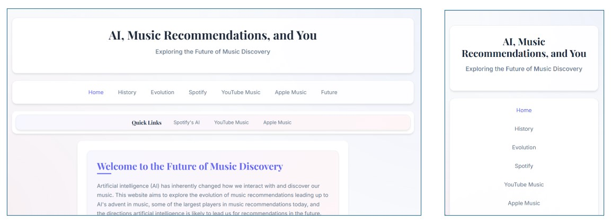
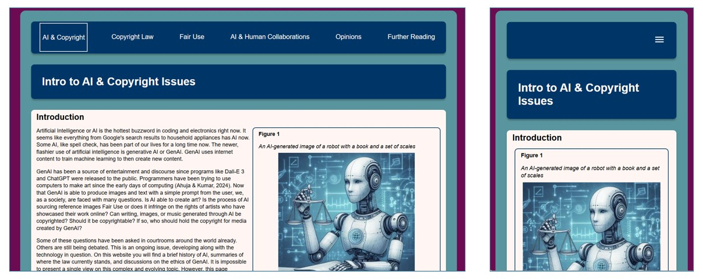
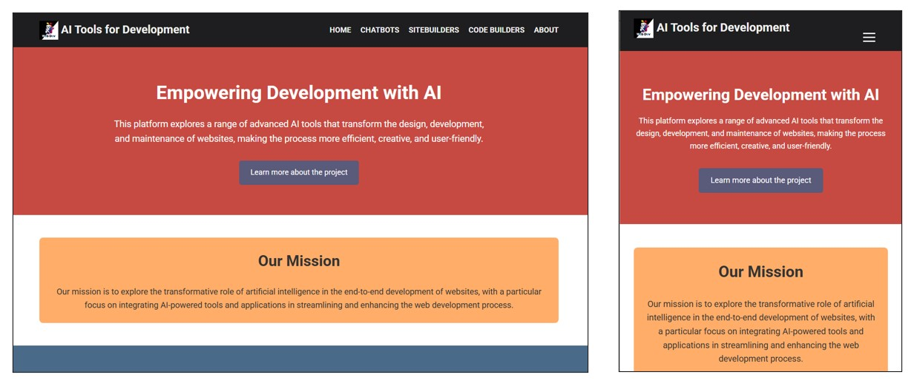
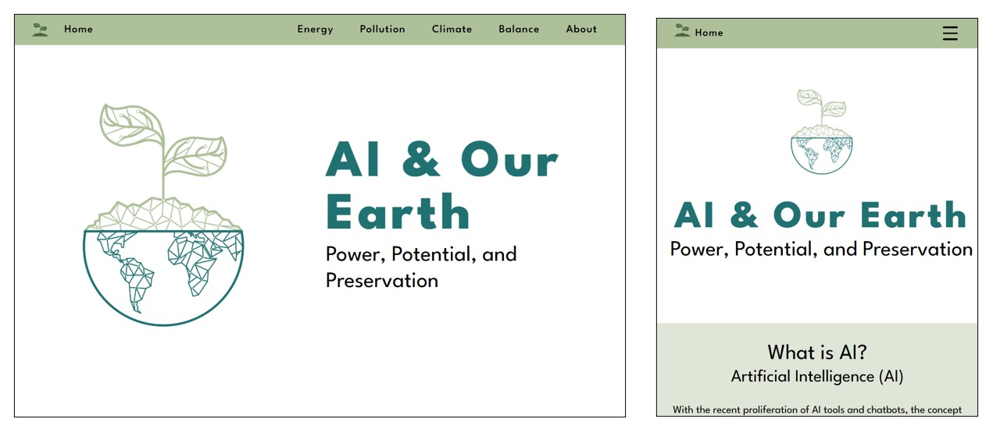
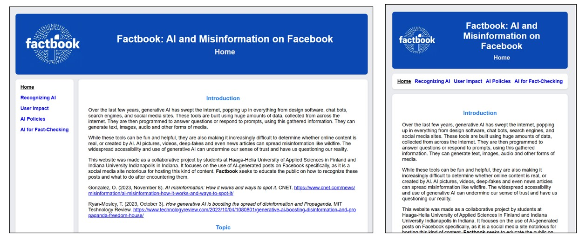

Overview
Course background
Students in the Indiana University Indianapolis (IUI) course “Information Structures for the Web” and select Haaga-Helia University of Applied Sciences (HH) students came together in the Spring 2025 semester to conduct an international collaboration. This year’s collaboration continued to build upon the initial groundwork that had been laid between the two schools as part of the Global Classroom Initiative in the Spring 2021 Semester.
Students in the IUI course of William Helling and Angela Murillo partnered with students recruited by Kasper Valtakari at HH; we had enough students for five small groups working to develop their own respective websites.
HH students were added to the IUI Canvas course as students via their IU guest accounts where they see lectures and submit assignment just like the IUI students. HH students were also added as guests to an instance of IU Microsoft Teams to work on designing their websites. All code for the websites was developed in GitHub.
In a further extension of this international collaboration, 10 IUI students traveled to Helsinki and met with their classroom partners from Haaga-Helia. Over the course of two weeks in Finland, the IU students’ activities included field trips and site visits relevant to the international collaboration, such as Haaga-Helia University of Applied Sciences, as well as to Finnish culture in general via visits to historic sites, museums, industries, and relevant events.
Student skills
Students in this class were asked to provide some indication of their skills so that the instructors could place them into groups with an appropriate mixture of talents for a website creation team.
IUI and HH students took a survey that sought thier knowledge/proficiency with:
- HTML (markup/coding, etc.)
- CSS (styles, template manipulation, etc.)
- Graphic Design (can you edit images? can you create images? etc.)
- Information Architecture (usability, accessibility, website design principles, etc.)
- Presentation Skills (creating slides or presentations of some type)
- Data Analytics skills (dealing with data, creating data visualizations, etc.
- Other Artistic Skills (colors, design, etc.)
- English Writing/Language Skills
- Skills you think would be valuable for your group project
Group project guidelines
Students were divided into groups depending on their talents and school affiliation. They were then allowed to communicate with each other to determine their own topic based on the general them of providing digital services. The technical guidelines were more strict:
- The website will have at least 5 pages (the total depends on your content, skills, etc., but you do not need too many to address a topic that is focused).
- HTML will be valid as per W3C Markup Validation Service (validator.w3.org/)
- CSS will be valid as per W3C CSS Validation Service (jigsaw.w3.org/css-validator/)
- Pages will be accessible as per WAVE Web Accessibility Evaluation Tool (wave.webaim.org/)
- Pages will be responsive for all devices.
- Preferred layout strategy is with named-area grid layouts as coverd in class so that all group members can understand the code and contribute.
- For those with scripting skills: Client-side scripting is permitted (e.g., JavaScript), but our final sites will be on GitHub. GitHub does not allow server-side scripting, so you can't use that (e.g., PHP, JAVA).
- No use of frameworks allowed (Bootstrap, Foundation, etc.).
Roles assigned
Each group member tried to contribute talents and skills according to their abilities. The main possible roles were:
- HTML/CSS tech: Will work on the markup for the website, get the tech stuff done with HTML/CSS and figure out other tech issues.
- graphic design: Will work on images needed for the site, finding, creating, and manipulating graphics (including video)
- IA/presentation/accessibility: Will work on site usability in all areas.
- data analytics/visualizations: Will supply data if needed (depending on the topic chosen) and also create visualizations, working with anyone else doing graphic design
- artistic skills: Will help control the look-and-feel of the site, its design and layout, including colors, fonts, etc.
- content writing (English): Will gather the content; edit it for grammar, syntax, and clarity; ensure proper citation of sources (if needed)
Group 1: AI, Music Recommendations, and You
Members: Aline Diaz Williamson, Ilja Ylikangas, Morgan Williams, Saima Kalliola, Megan Elsen
Visit Site"Artificial intelligence (AI) has inherently changed how we interact with and discover our music. This website aims to explore the evolution of music recommendations leading up to AI's advent in music, some of the largest players in music recommendations today, and the directions artificial intelligence is likely to lead us for recommendations in the future."

Group 2: Intro to AI & Copyright Issues
Members: Amanda Knol, Leo Koivunen, Sarah Ankenbauer, Stormie Franks, Joonas Lintunen, Noah George, Selma Essed, Bridget O'Leary
Visit Site"Copyright law is designed to encourage creativity by protecting artists' works from unauthorized use. It is a constantly evolving field that must keep up with rapid technological changes. Within this structure, Fair Use plays a vital role by permitting limited use of copyrighted material without permission, as long as it is for non-commercial purposes like reviews or search previews. This careful balance aims to align the rights of creators with the needs of users. As technologies like Generative AI advance, they spark new conversations and debates about creativity and the changing nature of copyright law. "

Group 3: Empowering Development with AI
Members: Jasmin Bretana, Rebecca Garner, Oona Kallinen, Claire Dorsch, Robyn Copeland, Jerrod Reed
Visit Site"This platform explores a range of advanced AI tools that transform the design, development, and maintenance of websites, making the process more efficient, creative, and user-friendly. Our mission is to explore the transformative role of artificial intelligence in the end-to-end development of websites, with a particular focus on integrating AI-powered tools and applications in streamlining and enhancing the web development process."

Group 4: AI & Our Earth
Members: Kayla Quadros, Sophia Madar, Joni Könkkölä , Luka Sauralehto, Joni Voong, Abby Embree, Kajsa Lindroos
Visit Site"We believe that artificial intelligence is one of the most powerful forces shaping our future – and that its environmental impact deserves just as much scrutiny as its technical potential. Our group was driven by a shared concern for climate resilience, ethical innovation, and the balance between progress and preservation."

Group 5: Factbook: AI and Misinformation on Facebook
Maeby Neaves, Katherine White, Joonas Laine, Abigail Smith, Sarah Bridges, Elias Jungman, Kyle Turpin, Danny Varghese
Visit Site“Over the last few years, generative AI has swept the internet, popping up in everything from design software, chat bots, search engines, and social media sites. These tools are built using huge amounts of data, collected from across the internet. They are then programmed to answer questions or respond to prompts, using this gathered information. They can generate text, images, audio and other forms of media.While these tools can be fun and helpful, they are also making it increasingly difficult to determine whether online content is real, or created by AI."
